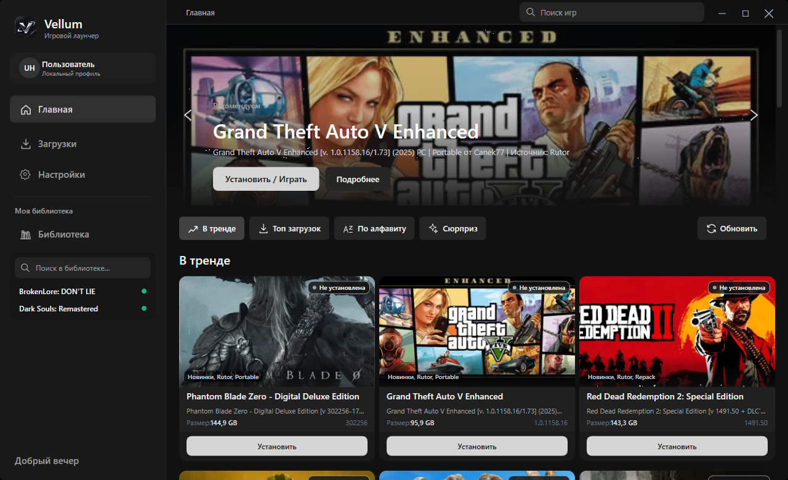

Ищи в каталоге
Встроенный поиск сводит результаты из подключённых источников. Дополнительные JSON-каталоги можно добавить в настройках.
Игровой лаунчер для Windows
Ищи игры в подключённых источниках, управляй загрузками и запускай установленное из своей библиотеки Vellum.

Возможности Vellum
Каталог, загрузки и установленная библиотека связаны в одном рабочем процессе.
Встроенный поиск сводит результаты из подключённых источников. Дополнительные JSON-каталоги можно добавить в настройках.
Смотри прогресс и скорость, ставь загрузку на паузу и продолжай позже.
Запускай установленные игры, проверяй файлы, открывай папку или ставь обновление.
Одна библиотека
В библиотеке отображаются установленные игры и текущие загрузки. Для каждой установки доступны запуск и инструменты управления.
Посмотреть ответы о настройкеДействия и статусы из интерфейса лаунчера
Рабочий процесс
Версия выбирается из результатов подключённых игровых источников.
Введи название в поиск каталога.
Сравни доступные варианты и требования к месту.
Следи за загрузкой и открой игру из библиотеки.
Текущая сборка
Установщик для Windows x64. Данные о файле и системные требования — на странице загрузки.
Нет. Vellum собран как self-contained приложение и содержит необходимые компоненты .NET.
Профиль лаунчера находится в папке %APPDATA%\Vellum. Настройки позволяют открыть папку данных и логов.
Скачай более новую сборку с сайта и запусти установщик. Автоматический канал обновления самого лаунчера в проекте не настроен.
Vellum для Windows